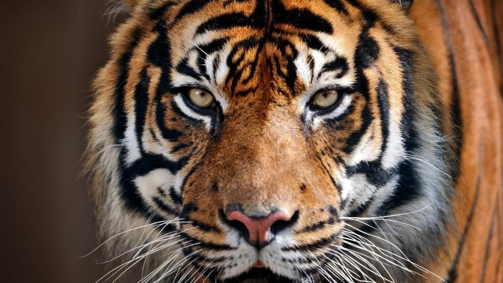
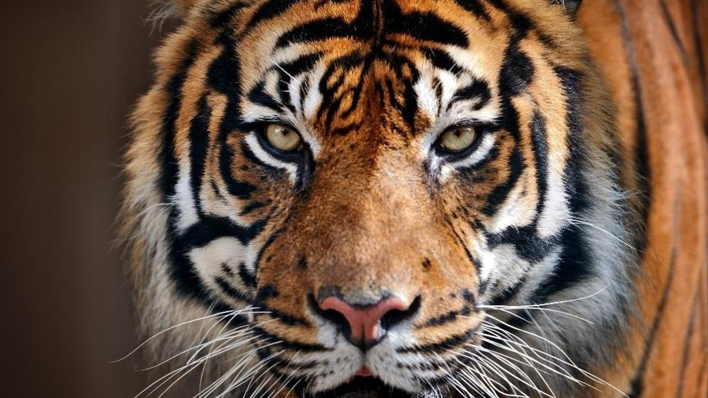
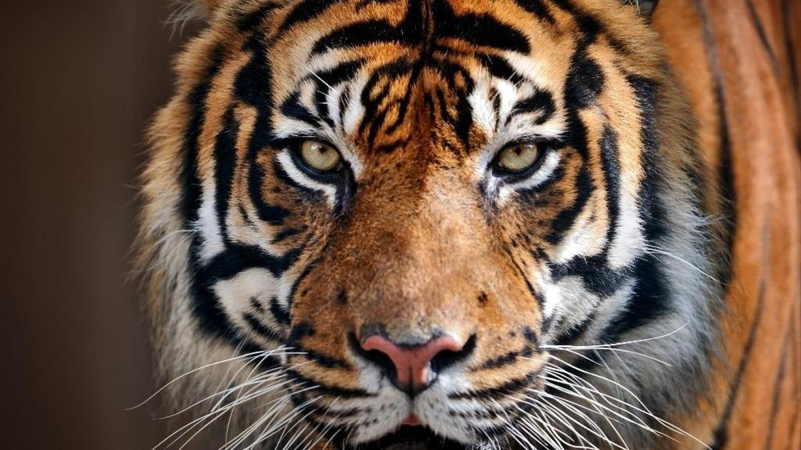
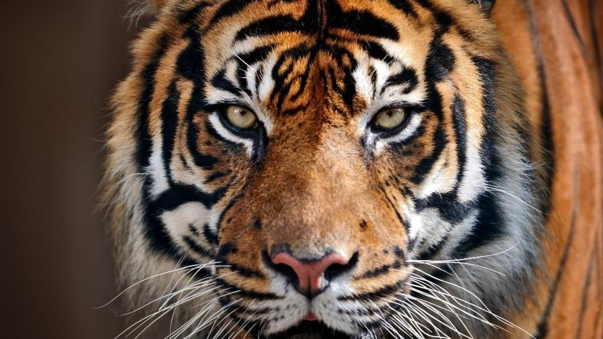

Quelques photos du tigre :
 



Animal fabuleux qui inspira terreur et respect des anciens, le tigre aurait disparu au cours du 20ème siècle si la communauté scientifique mondiale n’avait tiré la sonnette d’alarme. C’est en 1969 que le WWF signale les chiffres catastrophiques des effectifs de tigres, moins de 2 000 en Inde. Parmi les 7 sous-espèces qui vivaient en 1900, seulement 5 subsistent actuellement.
Le tigre vit dans les forêts et dans les prairies du sud et de l’est de l’Asie. On peut trouver des tigres dans des pays comme la Chine, la Thaïlande, le Bangladesh, l’Inde, le Vietnam, la Russie…
EN SAVOIR PLUS SUR LE TIGRE